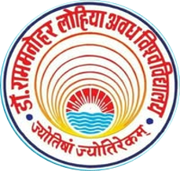
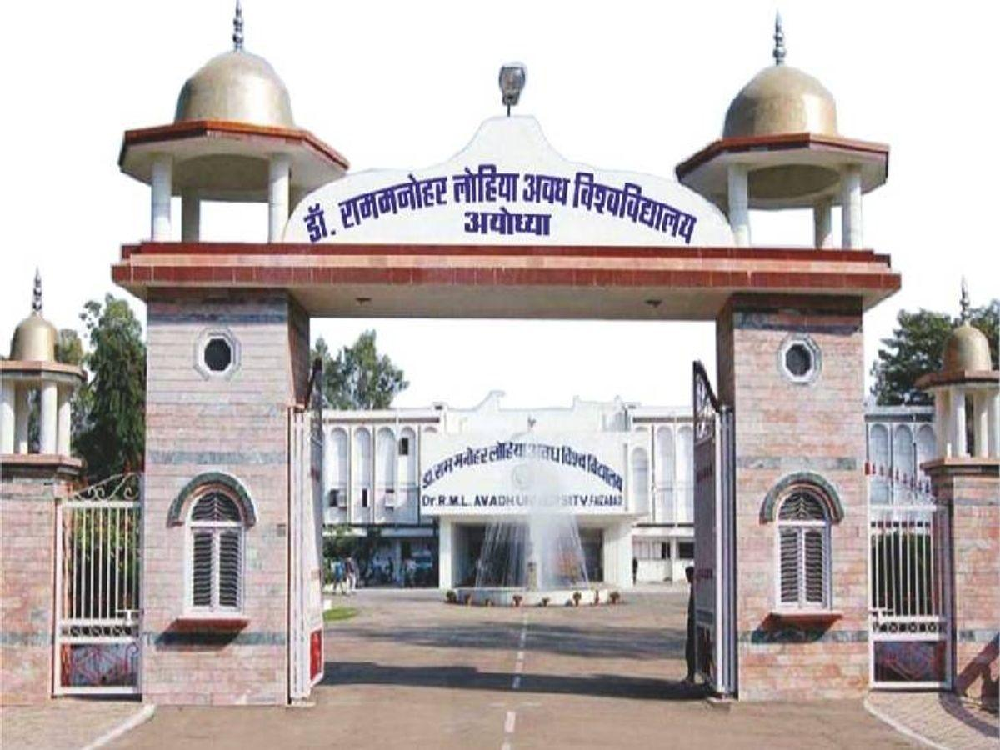
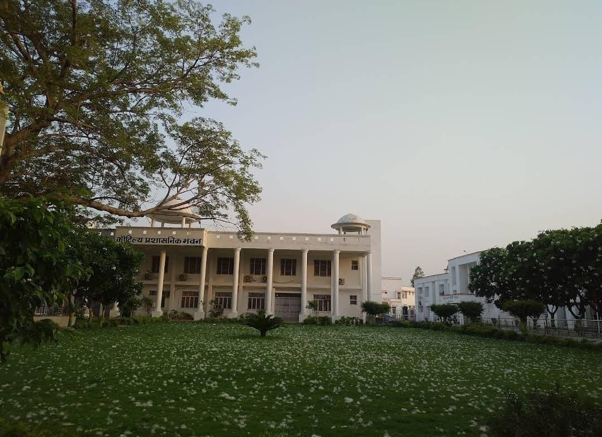
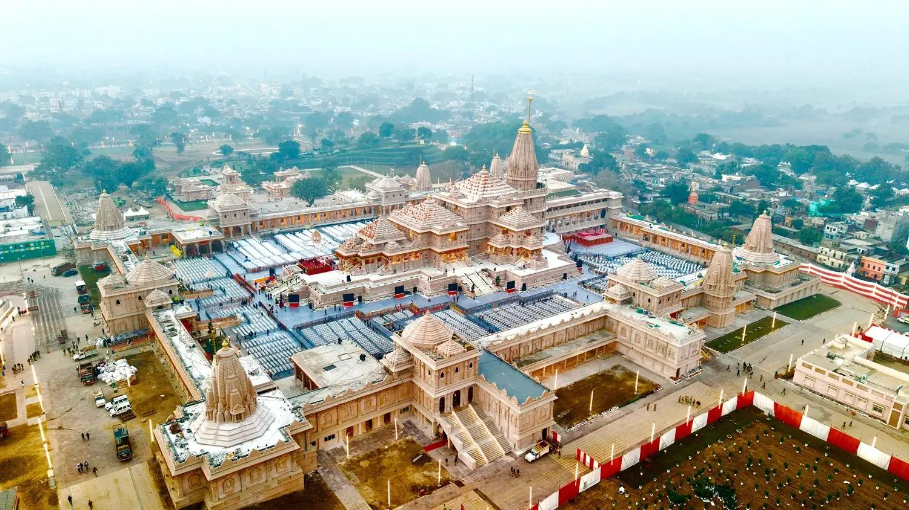
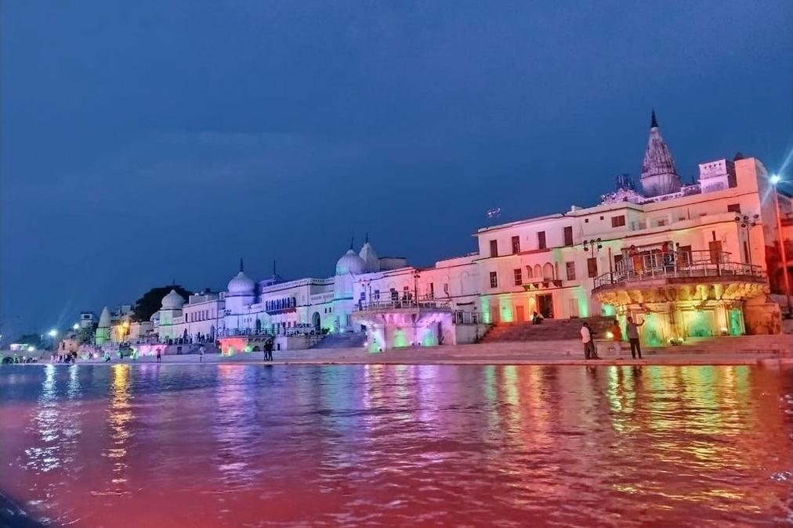

Medical and Clinical Microbiology
Pathogens, diagnostics, clinical microbiology, infection biology and emerging infectious diseases.
07–09 JANUARY 2027 • AYODHYA, UTTAR PRADESH, INDIA
ICMS 2027
Innovations in Microbiology & Biotechnology for a Sustainable Future
A platform for researchers, academicians, students, industry professionals and innovators to exchange ideas, discoveries and technologies shaping the future of microbiology and biotechnology.
Ayodhya, Uttar Pradesh
ABOUT THE CONFERENCE
ICMS 2027 brings together the scientific community to discuss emerging discoveries, technologies and applications across microbiological sciences and biotechnology.
The conference is designed to encourage interdisciplinary collaboration, knowledge exchange, young-researcher engagement and meaningful academic–industry interaction.
SCIENTIFIC THEMES
Pathogens, diagnostics, clinical microbiology, infection biology and emerging infectious diseases.
AMR surveillance, resistance mechanisms, antimicrobial stewardship and infectious disease research.
Microbial ecology, soil and water microbiology, plant–microbe interactions and sustainable agriculture.
Food safety, probiotics, fermentation, industrial microorganisms, enzymes and microbial products.
Microbial bioprocesses, nanomaterials, bioinnovation, synthetic biology and advanced applications.
Genome analysis, metagenomics, microbial diversity, sequencing, computational biology and data science.
Microbiome structure and function, host–microbe interactions, fermentation and microbial enology.
Viral biology, emerging viruses, phage biology, phage therapy and virus–host interactions.
Integrated human–animal–environment health, wastewater epidemiology and microbial surveillance.
AI/ML, automation, advanced diagnostics, imaging, biosensors and emerging technologies in microbiology.
CONFERENCE LEADERSHIP
Conference leadership details will be updated as the final confirmations are received.
Designation
Dr. Rammanohar Lohia Avadh University, Ayodhya
Designation
Dr. Rammanohar Lohia Avadh University, Ayodhya
Designation
Department of Microbiology
Dr. Rammanohar Lohia Avadh University, Ayodhya
SCIENTIFIC COMMUNITY
Keynote / Invited Speaker
Speaker details will be announced.
Keynote / Invited Speaker
Speaker details will be announced.
Keynote / Invited Speaker
Speaker details will be announced.
Keynote / Invited Speaker
Speaker details will be announced.
PROGRAMME
Inauguration • Keynote Sessions • Scientific Sessions
Technical Sessions • Poster Presentations • Young Scientist Sessions
Technical Sessions • Valedictory Session • Awards & Closing
ABSTRACT SUBMISSION
Please prepare the abstract in the following order:
Provide 3–5 keywords below the abstract.
SUGGESTED ABSTRACT TEMPLATE
Author A1*, Author B2 and Author C1
1Department of Microbiology, XYZ University, India
2Department of Biotechnology, ABC Institute, India
*Corresponding author: email@example.com
Abstract: [Write the abstract within 300 words, preferably covering Background/Objectives, Methods, Results and Conclusion.]
Keywords: Antimicrobial resistance; Microbial biotechnology; Metagenomics; One Health; Microbiology
REGISTRATION
Registration fees as announced for ICMS 2027.
REGISTRATION PAYMENT
IMPORTANT DATES
CONFERENCE VENUE
Ayodhya, Uttar Pradesh, India

The International Conference on Microbiological Sciences (ICMS–2027) will be hosted at the Department of Microbiology, Dr. Rammanohar Lohia Avadh University (RMLAU), Ayodhya, Uttar Pradesh, India.
Established in 1975, Dr. Rammanohar Lohia Avadh University is a premier state university recognized by the University Grants Commission (UGC). The university has emerged as an important center for higher education, research, and innovation in northern India, offering multidisciplinary academic programs across science, technology, medicine, agriculture, social sciences, management, and humanities. Its modern infrastructure, research laboratories, conference facilities, digital library, and green campus provide an excellent environment for national and international scientific events.
The Department of Microbiology is actively engaged in teaching, research, and innovation in diverse areas. The department of Microbiology was established in 1993. The department offers undergraduate, postgraduate and doctoral degrees with an objective to generate competent man power in sundry avenues of Microbiology. The department has received support from DST under FIST programme. The department has been recognized as “Centre of Excellence” by Government of Uttar Pradesh. It is well equipped with the basic and latest facilities to carryout research in Microbiology.
University Website →

ABOUT AYODHYA
Ayodhya, situated on the banks of the sacred Saryu River, is one of the world's oldest continuously inhabited cities and a major center of India's spiritual, cultural, and historical heritage. Revered as the birthplace of Lord Rama, the city welcomes millions of visitors each year and offers a unique blend of ancient traditions and modern infrastructure.
In recent years, Ayodhya has undergone remarkable urban transformation, including the development of improved roads, public amenities, hotels, convention facilities, and transport networks. The city provides visitors with an opportunity to experience its rich heritage while participating in a world-class scientific conference.


MAJOR ATTRACTIONS
Delegates may also enjoy local cuisine, traditional handicrafts, cultural performances, and heritage walks during their stay.
ACCESSIBILITY
Ayodhya is well connected to major cities across India through air, rail, and road.
The city is served by Maharishi Valmiki International Airport, Ayodhyadham, with regular flights connecting Ayodhya to Delhi, Mumbai, Bengaluru, Kolkata, Ahmedabad, and several other major cities. The airport is approximately 3 km from the university campus.
Ayodhya Dham Junction and Ayodhya Cantt Railway Station provide excellent rail connectivity to New Delhi, Lucknow, Varanasi, Prayagraj, Kanpur, Gorakhpur, Patna, Kolkata, Mumbai, Chennai, and other major destinations.
Ayodhya is connected through an extensive network of national and state highways, with frequent bus and taxi services from Lucknow, Prayagraj, Varanasi, Gorakhpur, Kanpur, and neighboring cities.
APPROXIMATE TRAVEL DISTANCES
CLIMATE IN JANUARY
Delegates are advised to carry light woollen clothing for early mornings and evenings.
ACCOMMODATION
The Organizing Committee will facilitate accommodation in a range of options suited to different delegate requirements.
Hotels are located within 2–8 km of the conference venue and are easily accessible by taxi and local transport.
A list of recommended hotels, tariffs, and booking procedures will be included in the Second Circular.
PUBLICATION
Selected full research papers will be considered for publication in a Scopus-indexed journal, subject to the journal’s editorial and peer-review process.
CONTACT
For registration, abstract submission, sponsorship and conference-related enquiries, please contact the organizing team.
ICMS 2027 Secretariat
Department of Microbiology
Dr. Rammanohar Lohia Avadh University
Ayodhya, Uttar Pradesh, India
Phone: 8707838994 / 9532038720
Website: www.rmlau.ac.in